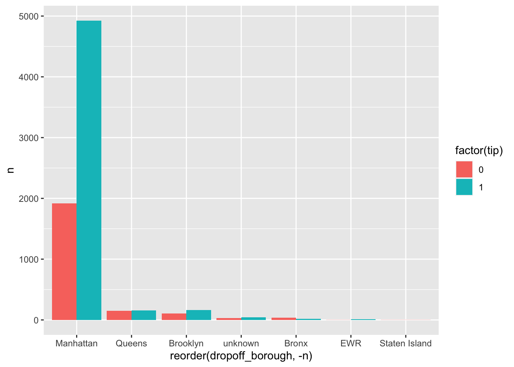
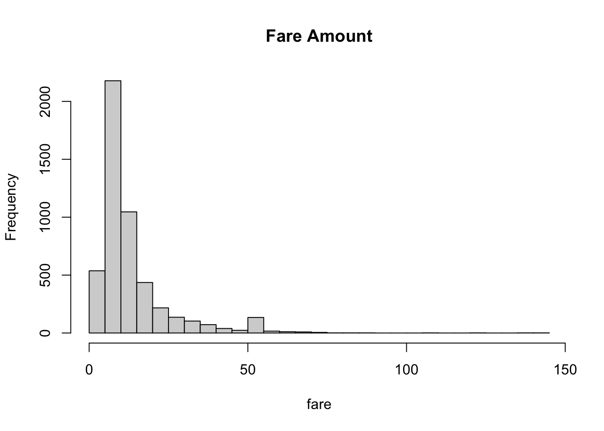
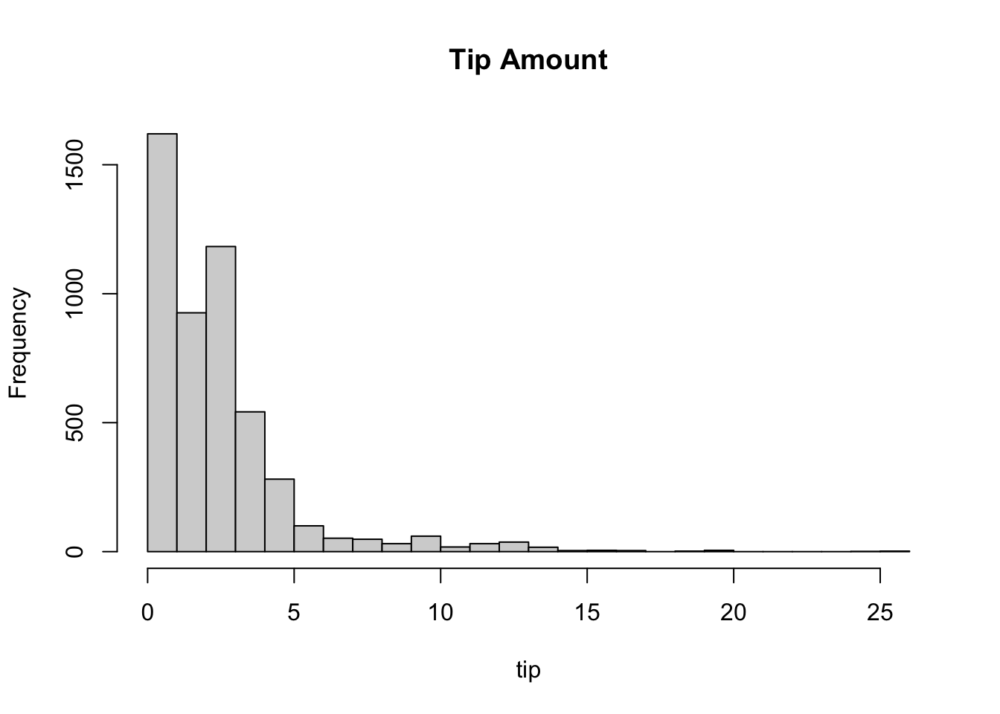
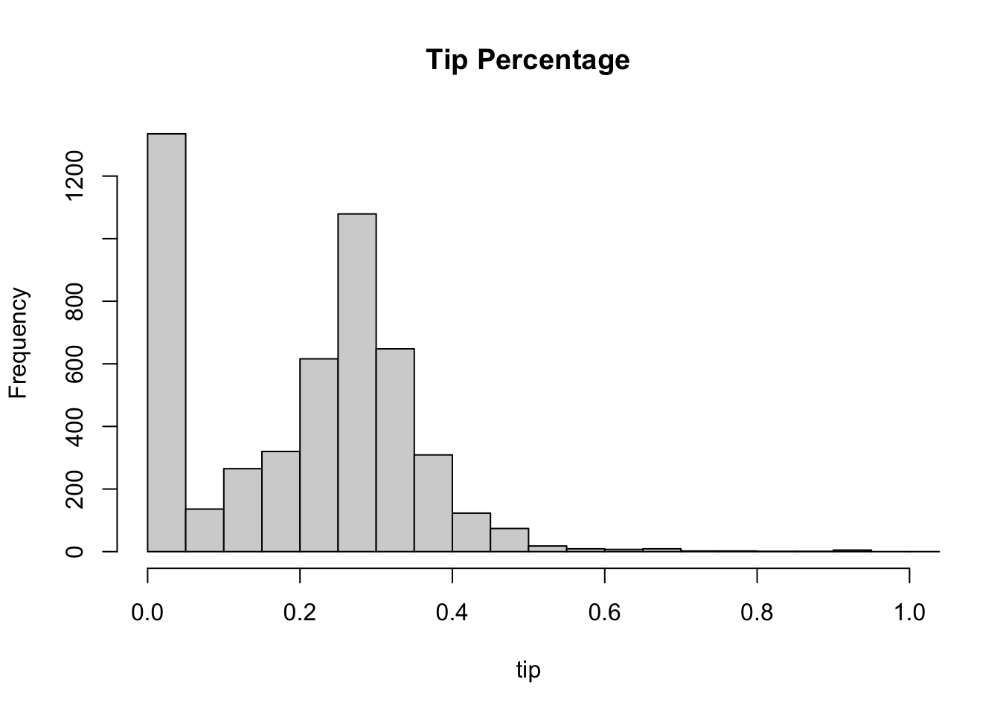
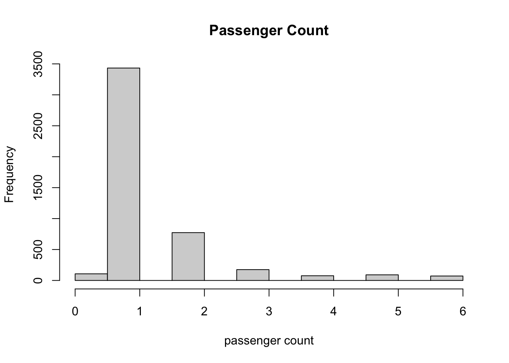
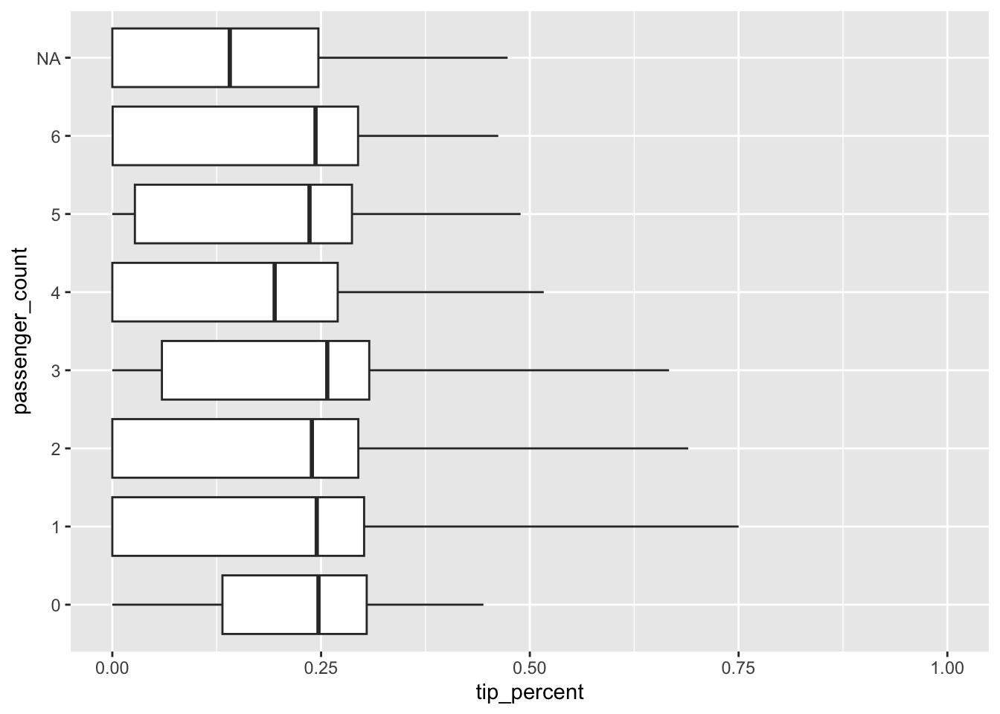
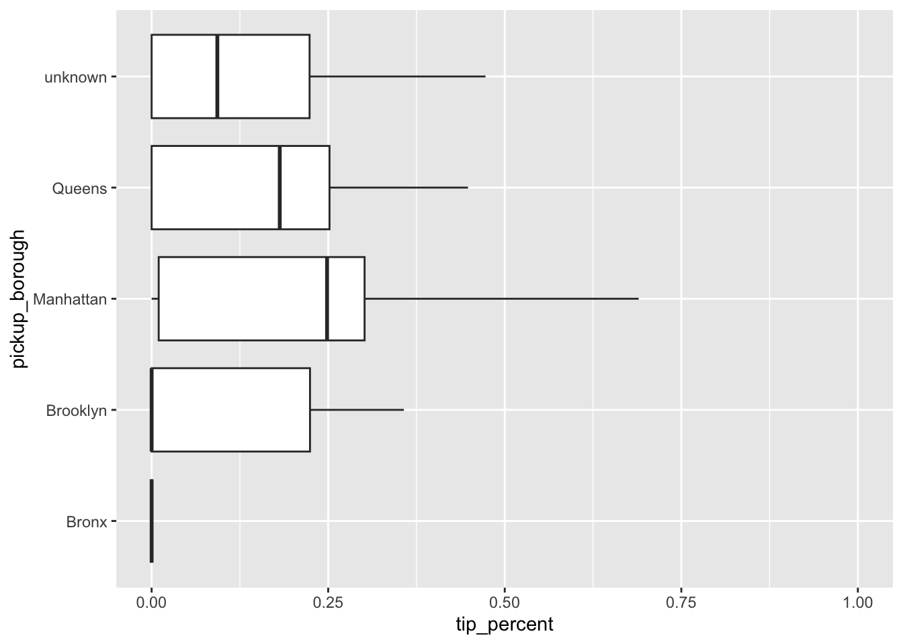
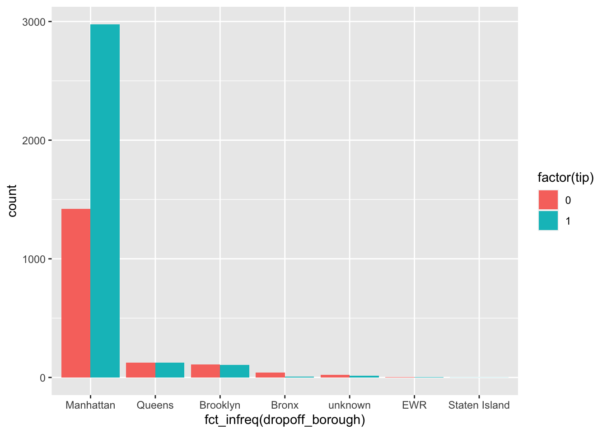

Chapter 2 Exploration
2.1 Data Wrangling
My goal is to look into the factors that determine how people tip. To do this, I want to create a “tipped” column that is just a binary of whether or not somebody tipped at all. I also want to create a “tip” column that shows whether or not somebody tipped over 15% of the fare amount.
## X VendorID tpep_pickup_datetime
## 0 132 0
## tpep_dropoff_datetime passenger_count trip_distance
## 0 231 0
## RatecodeID store_and_fwd_flag PULocationID
## 231 0 0
## DOLocationID payment_type fare_amount
## 0 132 0
## extra mta_tax tip_amount
## 0 0 0
## tolls_amount improvement_surcharge total_amount
## 0 0 0
## congestion_surcharge
## 99To understand the columns and what the values mean, I used this site: https://www.nyc.gov/assets/tlc/downloads/pdf/data_dictionary_trip_records_yellow.pdf
It seems that most columns don’t have NAs. The ones that do are passenger_count, VendorID, RatecodeID, payment_type, and congestion_surcharge.
- Passenger_count: just remove the rows that don’t have this value
- VendorID: replace NA with 0 to represent unknown
- RatecodeID: not sure
- payment_type: replace all NA with code 5 (unknown)
- congestion_surcharge: not sure
## X VendorID tpep_pickup_datetime
## 0 0 0
## tpep_dropoff_datetime passenger_count trip_distance
## 0 231 0
## RatecodeID store_and_fwd_flag PULocationID
## 231 0 0
## DOLocationID payment_type fare_amount
## 0 0 0
## extra mta_tax tip_amount
## 0 0 0
## tolls_amount improvement_surcharge total_amount
## 0 0 0
## congestion_surcharge
## 99For some reason, removing all rows with passenger_count NA removes all other NA instances. This is good!
## [1] 0.2672## [1] 4999 20## [1] 0.3516703As we can see, of the sampled data, 27.1% of rides were NOT tipped and 29.6% of rides were tipped under 10% (including not tipped at all).
Next, I want to get a general sense of the distribution of tip amounts and the distribution of fare amounts.

This is odd- there seem to be some rides where the fare amount is negative (the taxi driver owes the passenger the fare amount). I did some research and attributed this to messy data, so I removed the negative fares and redid the histogram.

We see that most fares seem to be around $5-20. I’d like to make a categorical variable for rides over and under $20.
## [1] 0.1622057So around 14.4% of all rides are over $20.

We see a spike at 0 representing the proportion of rides that weren’t tipped at all. Generally, we see that most rides are tipped between the $0-5 range.

We see a spike at 0 representing the proportion of rides that aren’t tipped at all. We also see a spike around 25-30% tip.
Next, I want to see how long these rides last. To do that, I need to first convert the pickup/dropoff times to time variables, and find the difference.
In my exploration of the data, there were some values that seemed like outliers (rides that took multiple hours). I removed 11 of these rows from the data set.
Next, I want to create a categorical variable for the season in which the ride took place based on the pickup time. To do this, I looked into this package: hydroTSM. Maybe the season in which the ride took place will impact the amount riders tip!
Finally, I would like to create a categorical variable that takes into account the pickup and dropoff locations. I don’t want it to be too granular, so I’m using the “pulocationID” and “dolocationID” columns. Just looking at the numbers, they don’t mean anything so I looked into what the IDs mean. I found this dataset: https://catalog.data.gov/dataset/nyc-taxi-zones and named it pickup_ids in my code. I cross-referenced the “borough” column of pickup_ids to figure out the borough each pickup ID corresponds to.
This link was also helpful. https://www.nyc.gov/assets/tlc/downloads/pdf/data_dictionary_trip_records_yellow.pdf
## pickup_borough
## Bronx Brooklyn Manhattan Queens unknown
## 19 57 4499 328 55## dropoff_borough
## Bronx Brooklyn EWR Manhattan Queens
## 47 215 8 4400 249
## Staten Island unknown
## 1 382.2 Data Visualization
Let’s look at the relative frequencies of the passenger count.

For the most part, we have rides with only 1 passenger, followed by 2. What’s surprising to me is that there are rides with 5-6 passengers at all; over covid, I remember that most taxis only allowed 1-3 passengers to ride but maybe by late 2021 they lifted the restrictions.
##
## 0 1 2 3 4 5 6
## 107 3433 773 175 76 91 72
This is interesting- there doesn’t seem to be much of a trend in passenger count vs tip percentage.
## pickup_borough
## Bronx Brooklyn Manhattan Queens unknown
## 19 57 4499 328 55

At this point in my iterations, I’ve created all the new categorical variables I’d like to create for my data analysis.